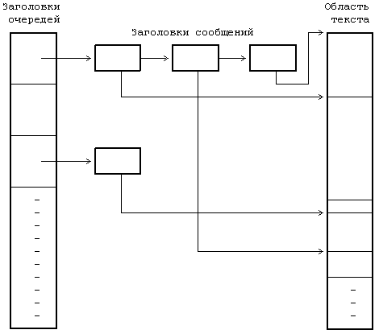
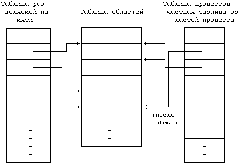
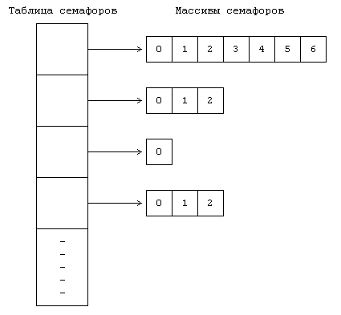
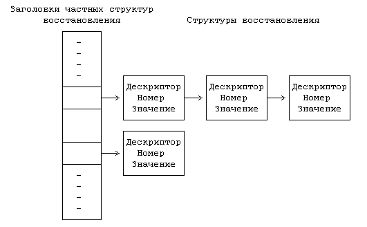
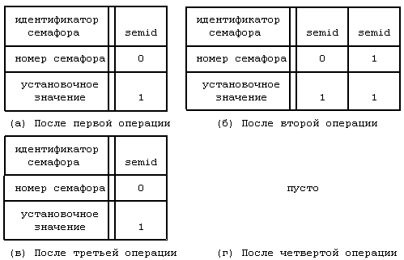

Пакет IPC (interprocess communication) в версии V системы UNIX включает в себя три механизма. Механизм сообщений дает процессам возможность посылать другим процессам потоки сформатированных данных, механизм разделения памяти позволяет процессам совместно использовать отдельные части виртуального адресного пространства, а семафоры - синхронизировать свое выполнение с выполнением параллельных процессов. Несмотря на то, что они реализуются в виде отдельных блоков, им присущи общие свойства.
- С каждым механизмом связана таблица, в записях которой описываются все его детали.
- В каждой записи содержится числовой ключ (key), который представляет собой идентификатор записи, выбранный пользователем.
- В каждом механизме имеется системная функция типа "get", используемая для создания новой или поиска существующей записи; параметрами функции являются идентификатор записи и различные флаги (flag). Ядро ведет поиск записи по ее идентификатору в соответствующей таблице. Процессы могут с помощью флага IPC_PRIVATE гарантировать получение еще неиспользуемой записи. С помощью флага IPC_CREAT они могут создать новую запись, если записи с указанным идентификатором нет, а если еще к тому же установить флаг IPC_EXCL, можно получить уведомление об ошибке в том случае, если запись с таким идентификатором существует. Функция возвращает некий выбранный ядром дескриптор, предназначенный для последующего использования в других системных функциях, таким образом, она работает аналогично системным функциям creat и open.
- В каждом механизме ядро использует следующую формулу для поиска по дескриптору указателя на запись в таблице структур данных:
указатель = значение дескриптора по модулю от числа записей в таблице
Если, например, таблица структур сообщений состоит из 100 записей, дескрипторы, связанные с записью номер 1, имеют значения, равные 1, 101, 201 и т.д. Когда процесс удаляет запись, ядро увеличивает значение связанного с ней дескриптора на число записей в таблице: полученный дескриптор станет новым дескриптором этой записи, когда к ней вновь будет произведено обращение при помощи функции типа "get". Процессы, которые будут пытаться обратиться к записи по ее старому дескриптору, потерпят неудачу. Обратимся вновь к предыдущему примеру. Если с записью 1 связан дескриптор, имеющий значение 201, при его удалении ядро назначит записи новый дескриптор, имеющий значение 301. Процессы, пытающиеся обратиться к дескриптору 201, получат ошибку, поскольку этого дескриптора больше нет. В конечном итоге ядро произведет перенумерацию дескрипторов, но пока это произойдет, может пройти значительный промежуток времени.
- Каждая запись имеет некую структуру данных, описывающую права доступа к ней и включающую в себя пользовательский и групповой коды идентификации, которые имеет процесс, создавший запись, а также пользовательский и групповой коды идентификации, установленные системной функцией типа "control" (об этом ниже), и двоичные коды разрешений чтения-записи-исполнения для владельца, группы и прочих пользователей, по аналогии с установкой прав доступа к файлам.
- В каждой записи имеется другая информация, описывающая состояние записи, в частности, идентификатор последнего из процессов, внесших изменения в запись (посылка сообщения, прием сообщения, подключение разделяемой памяти и т.д.), и время последнего обращения или корректировки.
- В каждом механизме имеется системная функция типа "control", запрашивающая информацию о состоянии записи, изменяющая эту информацию или удаляющая запись из системы. Когда процесс запрашивает информацию о состоянии записи, ядро проверяет, имеет ли процесс разрешение на чтение записи, после чего копирует данные из записи таблицы по адресу, указанному пользователем. При установке значений принадлежащих записи параметров ядро проверяет, совпадают ли между собой пользовательский код идентификации процесса и идентификатор пользователя (или создателя), указанный в записи, не запущен ли процесс под управлением суперпользователя; одного разрешения на запись недостаточно для установки параметров. Ядро копирует сообщенную пользователем информацию в запись таблицы, устанавливая значения пользовательского и группового кодов идентификации, режимы доступа и другие параметры (в зависимости от типа механизма). Ядро не изменяет значения полей, описывающих пользовательский и групповой коды идентификации создателя записи, поэтому пользователь, создавший запись, сохраняет управляющие права на нее. Пользователь может удалить запись, либо если он является суперпользователем, либо если идентификатор процесса совпадает с любым из идентификаторов, указанных в структуре записи. Ядро увеличивает номер дескриптора, чтобы при следующем назначении записи ей был присвоен новый дескриптор. Следовательно, как уже ранее говорилось, если процесс попытается обратиться к записи по старому дескриптору, вызванная им функция получит отказ.
С сообщениями работают четыре системных функции: msgget, которая возвращает (и в некоторых случаях создает) дескриптор сообщения, определяющий очередь сообщений и используемый другими системными функциями, msgctl, которая устанавливает и возвращает связанные с дескриптором сообщений параметры или удаляет дескрипторы, msgsnd, которая посылает сообщение, и msgrcv, которая получает сообщение.
Синтаксис вызова системной функции msgget:
msgqid = msgget(key,flag);
где msgqid - возвращаемый функцией дескриптор, а key и flag имеют ту же семантику, что и в системной функции типа "get". Ядро хранит сообщения в связном списке (очереди), определяемом значением дескриптора, и использует значение msgqid в качестве указателя на массив заголовков очередей. Кроме вышеуказанных полей, описывающих общие для всего механизма права доступа, заголовок очереди содержит следующие поля:
- Указатели на первое и последнее сообщение в списке;
- Количество сообщений и общий объем информации в списке в байтах;
- Максимальная емкость списка в байтах;
- Идентификаторы процессов, пославших и принявших сообщения последними;
- Поля, указывающие время последнего выполнения функций msgsnd, msgrcv и msgctl.
Когда пользователь вызывает функцию msgget для того, чтобы создать новый дескриптор, ядро просматривает массив очередей сообщений в поисках существующей очереди с указанным идентификатором. Если такой очереди нет, ядро выделяет новую очередь, инициализирует ее и возвращает идентификатор пользователю. В противном случае ядро проверяет наличие необходимых прав доступа и завершает выполнение функции.
Для посылки сообщения процесс использует системную функцию msgsnd:
msgsnd(msgqid,msg,count,flag);
где msgqid - дескриптор очереди сообщений, обычно возвращаемый функцией msgget, msg - указатель на структуру, состоящую из типа в виде назначаемого пользователем целого числа и массива символов, count - размер информационного массива, flag - действие, предпринимаемое ядром в случае переполнения внутреннего буферного пространства.
алгоритм msgsnd /* послать сообщение */
входная информация: (1) дескриптор очереди сообщений
(2) адрес структуры сообщения
(3) размер сообщения
(4) флаги
выходная информация: количество посланных байт
{
проверить правильность указания дескриптора и наличие
соответствующих прав доступа;
выполнить пока (для хранения сообщения не будет выделено
место)
{
если (флаги не разрешают ждать)
вернуться;
приостановиться (до тех пор, пока место не освобо-
дится);
}
получить заголовок сообщения;
считать текст сообщения из пространства задачи в прост-
ранство ядра;
настроить структуры данных: выстроить очередь заголовков
сообщений, установить в заголовке указатель на текст
сообщения, заполнить поля, содержащие счетчики, время
последнего выполнения операций и идентификатор процес-
са;
вывести из состояния приостанова все процессы, ожидающие
разрешения считать сообщение из очереди;
}
|
Рисунок 11.4. Алгоритм посылки сообщения
Ядро проверяет (Рисунок 11.4), имеется ли у посылающего сообщение процесса разрешения на запись по указанному дескриптору, не выходит ли размер сообщения за установленную системой границу, не содержится ли в очереди слишком большой объем информации, а также является ли тип сообщения положительным целым числом. Если все условия соблюдены, ядро выделяет сообщению место, используя карту сообщений (см. раздел 9.1
), и копирует в это место данные из пространства пользователя. К сообщению присоединяется заголовок, после чего оно помещается в конец связного списка заголовков сообщений. В заголовке сообщения записывается тип и размер сообщения, устанавливается указатель на текст сообщения и производится корректировка содержимого различных полей заголовка очереди, содержащих статистическую информацию (количество сообщений в очереди и их суммарный объем в байтах, время последнего выполнения операций и идентификатор процесса, пославшего сообщение). Затем ядро выводит из состояния приостанова все процессы, ожидающие пополнения очереди сообщений. Если размер очереди в байтах превышает границу допустимости, процесс приостанавливается до тех пор, пока другие сообщения не уйдут из очереди. Однако, если процессу было дано указание не ждать (флаг IPC_NOWAIT), он немедленно возвращает управление с уведомлением об ошибке. На Рисунке 11.5 показана очередь сообщений, состоящая из заголовков сообщений, организованных в связные списки, с указателями на область текста.

Рисунок 11.5. Структуры данных, используемые в организации сообщений
Рассмотрим программу, представленную на Рисунке 11.6. Процесс вызывает функцию msgget для того, чтобы получить дескриптор для записи с идентификатором MSGKEY. Длина сообщения принимается равной 256 байт, хотя используется только первое поле целого типа, в область текста сообщения копируется идентификатор процесса, типу сообщения присваивается значение 1, после чего вызывается функция msgsnd для посылки сообщения. Мы вернемся к этому примеру позже.
Процесс получает сообщения, вызывая функцию msgrcv по следующему формату:
count = msgrcv(id,msg,maxcount,type,flag);
где id - дескриптор сообщения, msg - адрес пользовательской структуры, которая будет содержать полученное сообщение, maxcount - размер структуры msg, type - тип считываемого сообщения, flag - действие, предпринимаемое ядром в том случае, если в очереди сообщений нет. В переменной count пользователю возвращается число прочитанных байт сообщения.
Ядро проверяет (Рисунок 11.7), имеет ли пользователь необходимые права доступа к очереди сообщений. Если тип считываемого сообщения имеет нулевое значение, ядро ищет первое по счету сообщение в связном списке. Если его размер меньше или равен размеру, указанному пользователем, ядро копирует текст сообщения в пользовательскую структуру и соответствующим образом настраивает свои внутренние структуры: уменьшает счетчик сообщений в очереди и суммарный объем информации в байтах, запоминает время получения сообщения и идентификатор процесса-получателя, перестраивает связный список и освобождает место в системном пространстве, где хранился текст сообщения. Если какие-либо процессы, ожидавшие получения сообщения, находились в состоянии приостанова из-за отсутствия свободного места в списке, ядро выводит их из этого состояния. Если размер сообщения превышает значение maxcount, указанное пользователем, ядро посылает системной функции уведомление об ошибке и оставляет сообщение в очереди. Если, тем не менее, процесс игнорирует ограничения на размер (в поле flag установлен бит MSG_NOERROR), ядро обрезает сообщение, возвращает запрошенное количество байт и удаляет сообщение из списка целиком.
#include <sys/types.h>
#include <sys/ipc.h>
#include <sys/msg.h>
#define MSGKEY 75
struct msgform {
long mtype;
char mtext[256];
};
main()
{
struct msgform msg;
int msgid,pid,*pint;
msgid = msgget(MSGKEY,0777);
pid = getpid();
pint = (int *) msg.mtext;
*pint = pid; /* копирование идентификатора
* процесса в область текста
* сообщения */
msg.mtype = 1;
msgsnd(msgid,&msg,sizeof(int),0);
msgrcv(msgid,&msg,256,pid,0); /* идентификатор
* процесса используется в
* качестве типа сообщения */
printf("клиент: получил от процесса с pid %d\n",
*pint);
}
|
Рисунок 11.6. Пользовательский процесс
алгоритм msgrcv /* получение сообщения */
входная информация: (1) дескриптор сообщения
(2) адрес массива, в который заносится
сообщение
(3) размер массива
(4) тип сообщения в запросе
(5) флаги
выходная информация: количество байт в полученном сообщении
{
проверить права доступа;
loop:
проверить правильность дескриптора сообщения;
/* найти сообщение, нужное пользователю */
если (тип сообщения в запросе == 0)
рассмотреть первое сообщение в очереди;
в противном случае если (тип сообщения в запросе > 0)
рассмотреть первое сообщение в очереди, имеющее
данный тип;
в противном случае /* тип сообщения в запросе < 0 */
рассмотреть первое из сообщений в очереди с наи-
меньшим значением типа при условии, что его тип
не превышает абсолютное значение типа, указанно-
го в запросе;
если (сообщение найдено)
{
переустановить размер сообщения или вернуть ошиб-
ку, если размер, указанный пользователем слишком
мал;
скопировать тип сообщения и его текст из прост-
ранства ядра в пространство задачи;
разорвать связь сообщения с очередью;
вернуть управление;
}
/* сообщений нет */
если (флаги не разрешают приостанавливать работу)
вернуть управление с ошибкой;
приостановиться (пока сообщение не появится в очере-
ди);
перейти на loop;
}
|
Рисунок 11.7. Алгоритм получения сообщения
Процесс может получать сообщения определенного типа, если присвоит параметру type соответствующее значение. Если это положительное целое число, функция возвращает первое значение данного типа, если отрицательное, ядро определяет минимальное значение типа сообщений в очереди, и если оно не превышает абсолютное значение параметра type, возвращает процессу первое сообщение этого типа. Например, если очередь состоит из трех сообщений, имеющих тип 3, 1 и 2, соответственно, а пользователь запрашивает сообщение с типом -2, ядро возвращает ему сообщение типа 1. Во всех случаях, если условиям запроса не удовлетворяет ни одно из сообщений в очереди, ядро переводит процесс в состояние приостанова, разумеется если только в параметре flag не установлен бит IPC_NOWAIT (иначе процесс немедленно выходит из функции).
Рассмотрим программы, представленные на Рисунках 11.6 и 11.8. Программа на Рисунке 11.8 осуществляет общее обслуживание запросов пользовательских процессов (клиентов). Запросы, например, могут касаться информации, хранящейся в базе данных; обслуживающий процесс (сервер) выступает необходимым посредником при обращении к базе данных, такой порядок облегчает поддержание целостности данных и организацию их защиты от несанкционированного доступа. Обслуживающий процесс создает сообщение путем установки флага IPC _CREAT при выполнении функции msgget и получает все сообщения типа 1 - запросы от процессов-клиентов. Он читает текст сообщения, находит идентификатор процесса-клиента и приравнивает возвращаемое значение типа сообщения значению этого идентификатора. В данном примере обслуживающий процесс возвращает в тексте сообщения процессу-клиенту его идентификатор, и клиент получает сообщения с типом, равным идентификатору клиента. Таким образом, обслуживающий процесс получает сообщения только от клиентов, а клиент - только от обслуживающего процесса. Работа процессов реализуется в виде многоканального взаимодействия, строящегося на основе одной очереди сообщений.
#include <sys/types.h>
#include <sys/ipc.h>
#include <sys/msg.h>
#define MSGKEY 75
struct msgform
{
long mtype;
char mtext[256];
}msg;
int msgid;
main()
{
int i,pid,*pint;
extern cleanup();
for (i = 0; i < 20; i++)
signal(i,cleanup);
msgid = msgget(MSGKEY,0777IPC_CREAT);
for (;;)
{
msgrcv(msgid,&msg,256,1,0);
pint = (int *) msg.mtext;
pid = *pint;
printf("сервер: получил от процесса с pid %d\n",
pid);
msg.mtype = pid;
*pint = getpid();
msgsnd(msgid,&msg,sizeof(int),0);
}
}
cleanup()
{
msgctl(msgid,IPC_RMID,0);
exit();
}
|
Рисунок 11.8. Обслуживающий процесс (сервер)
Сообщения имеют форму "тип - текст", где текст представляет собой поток байтов. Указание типа дает процессам возможность выбирать сообщения только определенного рода, что в файловой системе не так легко сделать. Таким образом, процессы могут выбирать из очереди сообщения определенного типа в порядке их поступления, причем эта очередность гарантируется ядром. Несмотря на то, что обмен сообщениями может быть реализован на пользовательском уровне средствами файловой системы, представленный вашему вниманию механизм обеспечивает более эффективную организацию передачи данных между процессами.
С помощью системной функции msgctl процесс может запросить информацию о статусе дескриптора сообщения, установить этот статус или удалить дескриптор сообщения из системы. Синтаксис вызова функции:
msgctl(id,cmd,mstatbuf)
где id - дескриптор сообщения, cmd - тип команды, mstatbuf - адрес пользовательской структуры, в которой будут храниться управляющие параметры или результаты обработки запроса. Более подробно об аргументах функции пойдет речь в Приложении.
Вернемся к примеру, представленному на Рисунке 11.8. Обслуживающий процесс принимает сигналы и с помощью функции cleanup удаляет очередь сообщений из системы. Если же им не было поймано ни одного сигнала или был получен сигнал SIGKILL, очередь сообщений остается в системе, даже если на нее не ссылается ни один из процессов. Дальнейшие попытки исключительно создания новой очереди сообщений с данным ключом (идентификатором) не будут иметь успех до тех пор, пока старая очередь не будет удалена из системы.
Процессы могут взаимодействовать друг с другом непосредственно путем разделения (совместного использования) участков виртуального адресного пространства и обмена данными через разделяемую память. Системные функции для работы с разделяемой памятью имеют много сходного с системными функциями для работы с сообщениями. Функция shmget создает новую область разделяемой памяти или возвращает адрес уже существующей области, функция shmat логически присоединяет область к виртуальному адресному пространству процесса, функция shmdt отсоединяет ее, а функция shmctl имеет дело с различными параметрами, связанными с разделяемой памятью. Процессы ведут чтение и запись данных в области разделяемой памяти, используя для этого те же самые машинные команды, что и при работе с обычной памятью. После присоединения к виртуальному адресному пространству процесса область разделяемой памяти становится доступна так же, как любой участок виртуальной памяти; для доступа к находящимся в ней данным не нужны обращения к каким-то дополнительным системным функциям.
Синтаксис вызова системной функции shmget:
shmid = shmget(key,size,flag);
где size - объем области в байтах. Ядро использует key для ведения поиска в таблице разделяемой памяти: если подходящая запись обнаружена и если разрешение на доступ имеется, ядро возвращает вызывающему процессу указанный в записи дескриптор. Если запись не найдена и если пользователь установил флаг IPC_CREAT, указывающий на необходимость создания новой области, ядро проверяет нахождение размера области в установленных системой пределах и выделяет область по алгоритму allocreg (раздел 6.5.2). Ядро записывает установки прав доступа, размер области и указатель на соответствующую запись таблицы областей в таблицу разделяемой памяти (Рисунок 11.9) и устанавливает флаг, свидетельствующий о том, что с областью не связана отдельная память. Области выделяется память (таблицы страниц и т.п.) только тогда, когда процесс присоединяет область к своему адресному пространству. Ядро устанавливает также флаг, говорящий о том, что по завершении последнего связанного с областью процесса область не должна освобождаться. Таким образом, данные в разделяемой памяти остаются в сохранности, даже если она не принадлежит ни одному из процессов (как часть виртуального адресного пространства последнего).

Рисунок 11.9. Структуры данных, используемые при разделении памяти
Процесс присоединяет область разделяемой памяти к своему виртуальному адресному пространству с помощью системной функции shmat:
virtaddr = shmat(id,addr,flags);
Значение id, возвращаемое функцией shmget, идентифицирует область разделяемой памяти, addr является виртуальным адресом, по которому пользователь хочет подключить область, а с помощью флагов (flags) можно указать, предназначена ли область только для чтения и нужно ли ядру округлять значение указанного пользователем адреса. Возвращаемое функцией значение, virtaddr, представляет собой виртуальный адрес, по которому ядро произвело подключение области и который не всегда совпадает с адресом, указанным пользователем.
В начале выполнения системной функции shmat ядро проверяет наличие у процесса необходимых прав доступа к области (Рисунок 11.10). Оно исследует указанный пользователем адрес; если он равен 0, ядро выбирает виртуальный адрес по своему усмотрению.
Область разделяемой памяти не должна пересекаться в виртуальном адресном пространстве процесса с другими областями; следовательно, ее выбор должен производиться разумно и осторожно. Так, например, процесс может увеличить размер принадлежащей ему области данных с помощью системной функции brk, и новая область данных будет содержать адреса, смежные с прежней областью; поэтому, ядру не следует присоединять область разделяемой памяти слишком близко к области данных процесса. Так же не следует размещать область разделяемой памяти вблизи от вершины стека, чтобы стек при своем последующем увеличении не залезал за ее пределы. Если, например, стек растет в направлении увеличения адресов, лучше всего разместить область разделяемой памяти непосредственно перед началом области стека.
алгоритм shmat /* подключить разделяемую память */
входная информация: (1) дескриптор области разделяемой
памяти
(2) виртуальный адрес для подключения
области
(3) флаги
выходная информация: виртуальный адрес, по которому область
подключена фактически
{
проверить правильность указания дескриптора, права до-
ступа к области;
если (пользователь указал виртуальный адрес)
{
округлить виртуальный адрес в соответствии с фла-
гами;
проверить существование полученного адреса, размер
области;
}
в противном случае /* пользователь хочет, чтобы ядро
* само нашло подходящий адрес */
ядро выбирает адрес: в случае неудачи выдается
ошибка;
присоединить область к адресному пространству процесса
(алгоритм attachreg);
если (область присоединяется впервые)
выделить таблицы страниц и отвести память под нее
(алгоритм growreg);
вернуть (виртуальный адрес фактического присоединения
области);
}
|
Рисунок 11.10. Алгоритм присоединения разделяемой памяти
Ядро проверяет возможность размещения области разделяемой памяти в адресном пространстве процесса и присоединяет ее с помощью алгоритма attachreg. Если вызывающий процесс является первым процессом, который присоединяет область, ядро выделяет для области все необходимые таблицы, используя алгоритм growreg, записывает время присоединения в соответствующее поле таблицы разделяемой памяти и возвращает процессу виртуальный адрес, по которому область была им подключена фактически.
Отсоединение области разделяемой памяти от виртуального адресного пространства процесса выполняет функция
shmdt(addr)
где addr - виртуальный адрес, возвращенный функцией shmat. Несмотря на то, что более логичной представляется передача идентификатора, процесс использует виртуальный адрес разделяемой памяти, поскольку одна и та же область разделяемой памяти может быть подключена к адресному пространству процесса несколько раз, к тому же ее идентификатор может быть удален из системы. Ядро производит поиск области по указанному адресу и отсоединяет ее от адресного пространства процесса, используя алгоритм detachreg (раздел 6.5.7). Поскольку в таблицах областей отсутствуют обратные указатели на таблицу разделяемой памяти, ядру приходится просматривать таблицу разделяемой памяти в поисках записи, указывающей на данную область, и записывать в соответствующее поле время последнего отключения области.
Рассмотрим программу, представленную на Рисунке 11.11. В ней описывается процесс, создающий область разделяемой памяти размером 128 Кбайт и дважды присоединяющий ее к своему адресному пространству по разным виртуальным адресам. В "первую" область он записывает данные, а читает их из "второй" области. На Рисунке 11.12 показан другой процесс, присоединяющий ту же область (он получает только 64 Кбайта, таким образом, каждый процесс может использовать разный объем области разделяемой памяти); он ждет момента, когда первый процесс запишет в первое принадлежащее области слово любое отличное от нуля значение, и затем принимается считывать данные из области. Первый процесс делает "паузу" (pause), предоставляя второму процессу возможность выполнения; когда первый процесс принимает сигнал, он удаляет область разделяемой памяти из системы.
Процесс запрашивает информацию о состоянии области разделяемой памяти и производит установку параметров для нее с помощью системной функции shmctl:
shmctl(id,cmd,shmstatbuf);
Значение id идентифицирует запись таблицы разделяемой памяти, cmd определяет тип операции, а shmstatbuf является адресом пользовательской структуры, в которую помещается информация о состоянии области. Ядро трактует тип операции точно так же, как и при управлении сообщениями. Удаляя область разделяемой памяти, ядро освобождает соответствующую ей запись в таблице разделяемой памяти и просматривает таблицу областей: если область не была присоединена ни к одному из процессов, ядро освобождает запись таблицы и все выделенные области ресурсы, используя для этого алгоритм freereg (раздел 6.5.6). Если же область по-прежнему подключена к каким-то процессам (значение счетчика ссылок на нее больше 0), ядро только сбрасывает флаг, говорящий о том, что по завершении последнего связанного с нею процесса область не должна освобождаться. Процессы, уже использующие область разделяемой памяти, продолжают работать с ней, новые же процессы не могут присоединить ее. Когда все процессы отключат область, ядро освободит ее. Это похоже на то, как в файловой системе после разрыва связи с файлом процесс может вновь открыть его и продолжать с ним работу.
Системные функции работы с семафорами обеспечивают синхронизацию выполнения параллельных процессов, производя набор действий единственно над группой семафоров (средствами низкого уровня). До использования семафоров, если процессу нужно было заблокировать некий ресурс, он прибегал к созданию с помощью системной функции creat специального блокирующего файла. Если файл уже существовал, функция creat завершалась неудачно, и процесс делал вывод о том, что ресурс уже заблокирован другим процессом. Главные недостатки такого подхода заключались в том, что процесс не знал, в какой момент ему следует предпринять следующую попытку, а также в том, что блокирующие файлы случайно оставались в системе в случае ее аварийного завершения или перезагрузки.
Дийкстрой был опубликован алгоритм Деккера, описывающий реализацию семафоров как целочисленных объектов, для которых определены две элементарные операции: P и V (см. [Dijkstra 68]). Операция P заключается в уменьшении значения семафора в том случае, если оно больше 0, операция V - в увеличении этого значения (и там, и там на единицу). Поскольку операции элементарные, в любой момент времени для каждого семафора выполняется не более одной операции P или V. Связанные с семафорами системные функции являются обобщением операций, предложенных Дийкстрой, в них допускается одновременное выполнение нескольких операций, причем операции уменьшения и увеличения выполняются над значениями, превышающими 1. Ядро выполняет операции комплексно; ни один из посторонних процессов не сможет переустанавливать значения семафоров, пока все операции не будут выполнены. Если ядро по каким-либо причинам не может выполнить все операции, оно не выполняет ни одной; процесс приостанавливает свою работу до тех пор, пока эта возможность не будет предоставлена.
Семафор в версии V системы UNIX состоит из следующих элементов:
- Значение семафора,
- Идентификатор последнего из процессов, работавших с семафором,
- Количество процессов, ожидающих увеличения значения семафора,
- Количество процессов, ожидающих момента, когда значение семафора станет равным 0.
Для создания набора семафоров и получения доступа к ним используется системная функция semget, для выполнения различных управляющих операций над набором - функция semctl, для работы со значениями семафоров - функция semop.
#include <sys/types.h>
#include <sys/ipc.h>
#include <sys/shm.h>
#define SHMKEY 75
#define K 1024
int shmid;
main()
{
int i, *pint;
char *addr1, *addr2;
extern char *shmat();
extern cleanup();
for (i = 0; i < 20; i++)
signal(i,cleanup);
shmid = shmget(SHMKEY,128*K,0777IPC_CREAT);
addr1 = shmat(shmid,0,0);
addr2 = shmat(shmid,0,0);
printf("addr1 Ox%x addr2 Ox%x\n",addr1,addr2);
pint = (int *) addr1;
for (i = 0; i < 256, i++)
*pint++ = i;
pint = (int *) addr1;
*pint = 256;
pint = (int *) addr2;
for (i = 0; i < 256, i++)
printf("index %d\tvalue %d\n",i,*pint++);
pause();
}
cleanup()
{
shmctl(shmid,IPC_RMID,0);
exit();
}
|
Рисунок 11.11. Присоединение процессом одной и той же области
разделяемой памяти дважды
#include <sys/types.h>
#include <sys/ipc.h>
#include <sys/shm.h>
#define SHMKEY 75
#define K 1024
int shmid;
main()
{
int i, *pint;
char *addr;
extern char *shmat();
shmid = shmget(SHMKEY,64*K,0777);
addr = shmat(shmid,0,0);
pint = (int *) addr;
while (*pint == 0)
;
for (i = 0; i < 256, i++)
printf("%d\n",*pint++);
}
|
Рисунок 11.12. Разделение памяти между процессами

Рисунок 11.13. Структуры данных, используемые в работе над семафорами
Синтаксис вызова системной функции semget:
id = semget(key,count,flag);
где key, flag и id имеют тот же смысл, что и в других механизмах взаимодействия процессов (обмен сообщениями и разделение памяти). В результате выполнения функции ядро выделяет запись, указывающую на массив семафоров и содержащую счетчик count (Рисунок 11.13). В записи также хранится количество семафоров в массиве, время последнего выполнения функций semop и semctl. Системная функция semget на Рисунке 11.14, например, создает семафор из двух элементов.
Синтаксис вызова системной функции semop:
oldval = semop(id,oplist,count);
где id - дескриптор, возвращаемый функцией semget, oplist - указатель на список операций, count - размер списка. Возвращаемое функцией значение oldval является прежним значением семафора, над которым производилась операция. Каждый элемент списка операций имеет следующий формат:
- номер семафора, идентифицирующий элемент массива семафоров, над которым выполняется операция,
- код операции,
- флаги.
#include <sys/types.h>
#include <sys/ipc.h>
#include <sys/sem.h>
#define SEMKEY 75
int semid;
unsigned int count;
/* определение структуры sembuf в файле sys/sem.h
* struct sembuf {
* unsigned shortsem_num;
* short sem_op;
* short sem_flg;
}; */
struct sembuf psembuf,vsembuf; /* операции типа P и V */
main(argc,argv)
int argc;
char *argv[];
{
int i,first,second;
short initarray[2],outarray[2];
extern cleanup();
if (argc == 1)
{
for (i = 0; i < 20; i++)
signal(i,cleanup);
semid = semget(SEMKEY,2,0777IPC_CREAT);
initarray[0] = initarray[1] = 1;
semctl(semid,2,SETALL,initarray);
semctl(semid,2,GETALL,outarray);
printf("начальные значения семафоров %d %d\n",
outarray[0],outarray[1]);
pause(); /* приостанов до получения сигнала */
}
/* продолжение на следующей странице */
|
Рисунок 11.14. Операции установки и снятия блокировки
else if (argv[1][0] == 'a')
{
first = 0;
second = 1;
}
else
{
first = 1;
second = 0;
}
semid = semget(SEMKEY,2,0777);
psembuf.sem_op = -1;
psembuf.sem_flg = SEM_UNDO;
vsembuf.sem_op = 1;
vsembuf.sem_flg = SEM_UNDO;
for (count = 0; ; count++)
{
psembuf.sem_num = first;
semop(semid,&psembuf,1);
psembuf.sem_num = second;
semop(semid,&psembuf,1);
printf("процесс %d счетчик %d\n",getpid(),count);
vsembuf.sem_num = second;
semop(semid,&vsembuf,1);
vsembuf.sem_num = first;
semop(semid,&vsembuf,1);
}
}
cleanup()
{
semctl(semid,2,IPC_RMID,0);
exit();
}
|
Рисунок 11.14. Операции установки и снятия блокировки (продолжение)
Ядро считывает список операций oplist из адресного пространства задачи и проверяет корректность номеров семафоров, а также наличие у процесса необходимых разрешений на чтение и корректировку семафоров (Рисунок 11.15). Если таких разрешений не имеется, системная функция завершается неудачно. Если ядру приходится приостанавливать свою работу при обращении к списку операций, оно возвращает семафорам их прежние значения и находится в состоянии приостанова до наступления ожидаемого события, после чего системная функция запускается вновь. Поскольку ядро хранит коды операций над семафорами в глобальном списке, оно вновь считывает этот список из пространства задачи, когда перезапускает системную функцию. Таким образом, операции выполняются комплексно - или все за один сеанс или ни одной.
алгоритм semop /* операции над семафором */
входная информация: (1) дескриптор семафора
(2) список операций над семафором
(3) количество элементов в списке
выходная информация: исходное значение семафора
{
проверить корректность дескриптора семафора;
start: считать список операций над семафором из простран-
ства задачи в пространство ядра;
проверить наличие разрешений на выполнение всех опера-
ций;
для (каждой операции в списке)
{
если (код операции имеет положительное значение)
{
прибавить код операции к значению семафора;
если (для данной операции установлен флаг UNDO)
скорректировать структуру восстановления
для данного процесса;
вывести из состояния приостанова все процессы,
ожидающие увеличения значения семафора;
}
в противном случае если (код операции имеет отрица-
тельное значение)
{
если (код операции + значение семафора >= 0)
{
прибавить код операции к значению семафо-
ра;
если (флаг UNDO установлен)
скорректировать структуру восстанов-
ления для данного процесса;
если (значение семафора равно 0)
/* продолжение на следующей страни-
* це */
|
Рисунок 11.15. Алгоритм выполнения операций над семафором
Ядро меняет значение семафора в зависимости от кода операции. Если код операции имеет положительное значение, ядро увеличивает значение семафора и выводит из состояния приостанова все процессы, ожидающие наступления этого события. Если код операции равен 0, ядро проверяет значение семафора: если оно равно 0, ядро переходит к выполнению других операций; в противном случае ядро увеличивает число приостановленных процессов, ожидающих, когда значение семафора станет нулевым, и "засыпает". Если код операции имеет отрицательное значение и если его абсолютное значение не превышает значение семафора, ядро прибавляет код операции (отрицательное число) к значению семафора. Если результат равен 0, ядро выводит из состояния приостанова все процессы, ожидающие обнуления значения семафора. Если результат меньше абсолютного значения кода операции, ядро приостанавливает процесс до тех пор, пока значение семафора не увеличится. Если процесс приостанавливается посреди операции, он имеет приоритет, допускающий прерывания; следовательно, получив сигнал, он выходит из этого состояния.
вывести из состояния приостанова все
процессы, ожидающие обнуления значе-
ния семафора;
продолжить;
}
выполнить все произведенные над семафором в
данном сеансе операции в обратной последова-
тельности (восстановить старое значение сема-
фора);
если (флаги не велят приостанавливаться)
вернуться с ошибкой;
приостановиться (до тех пор, пока значение се-
мафора не увеличится);
перейти на start; /* повторить цикл с самого
* начала * /
}
в противном случае /* код операции равен нулю */
{
если (значение семафора отлично от нуля)
{
выполнить все произведенные над семафором
в данном сеансе операции в обратной по-
следовательности (восстановить старое
значение семафора);
если (флаги не велят приостанавливаться)
вернуться с ошибкой;
приостановиться (до тех пор, пока значение
семафора не станет нулевым);
перейти на start; /* повторить цикл */
}
}
} /* конец цикла */
/* все операции над семафором выполнены */
скорректировать значения полей, в которых хранится вре-
мя последнего выполнения операций и идентификаторы
процессов;
вернуть исходное значение семафора, существовавшее в
момент вызова функции semop;
}
|
Рисунок 11.15. Алгоритм выполнения операций над семафором (продолжение)
Перейдем к программе, представленной на Рисунке 11.14, и предположим, что пользователь исполняет ее (под именем a.out) три раза в следующем порядке:
a.out &
a.out a &
a.out b &
Если программа вызывается без параметров, процесс создает набор семафоров из двух элементов и присваивает каждому семафору значение, равное 1. Затем процесс вызывает функцию pause и приостанавливается для получения сигнала, после чего удаляет семафор из системы (cleanup). При выполнении программы с параметром 'a' процесс (A) производит над семафорами в цикле четыре операции: он уменьшает на единицу значение семафора 0, то же самое делает с семафором 1, выполняет команду вывода на печать и вновь увеличивает значения семафоров 0 и 1. Если бы процесс попытался уменьшить значение семафора, равное 0, ему пришлось бы приостановиться, следовательно, семафор можно считать захваченным (недоступным для уменьшения). Поскольку исходные значения семафоров были равны 1 и поскольку к семафорам не было обращений со стороны других процессов, процесс A никогда не приостановится, а значения семафоров будут изменяться только между 1 и 0. При выполнении программы с параметром 'b' процесс (B) уменьшает значения семафоров 0 и 1 в порядке, обратном ходу выполнения процесса A. Когда процессы A и B выполняются параллельно, может сложиться ситуация, в которой процесс A захватил семафор 0 и хочет захватить семафор 1, а процесс B захватил семафор 1 и хочет захватить семафор 0. Оба процесса перейдут в состояние приостанова, не имея возможности продолжить свое выполнение. Возникает взаимная блокировка, из которой процессы могут выйти только по получении сигнала.
Чтобы предотвратить возникновение подобных проблем, процессы могут выполнять одновременно несколько операций над семафорами. В последнем примере желаемый эффект достигается благодаря использованию следующих операторов:
struct sembuf psembuf[2];
psembuf[0].sem_num = 0;
psembuf[1].sem_num = 1;
psembuf[0].sem_op = -1;
psembuf[1].sem_op = -1;
semop(semid,psembuf,2);
Psembuf - это список операций, выполняющих одновременное уменьшение значений семафоров 0 и 1. Если какая-то операция не может выполняться, процесс приостанавливается. Так, например, если значение семафора 0 равно 1, а значение семафора 1 равно 0, ядро оставит оба значения неизменными до тех пор, пока не сможет уменьшить и то, и другое.
Установка флага IPC_NOWAIT в функции semop имеет следующий смысл: если ядро попадает в такую ситуацию, когда процесс должен приостановить свое выполнение в ожидании увеличения значения семафора выше определенного уровня или, наоборот, снижения этого значения до 0, и если при этом флаг IPC_NOWAIT установлен, ядро выходит из функции с извещением об ошибке. Таким образом, если не приостанавливать процесс в случае невозможности выполнения отдельной операции, можно реализовать условный тип семафора.
Если процесс выполняет операцию над семафором, захватывая при этом некоторые ресурсы, и завершает свою работу без приведения семафора в исходное состояние, могут возникнуть опасные ситуации. Причинами возникновения таких ситуаций могут быть как ошибки программирования, так и сигналы, приводящие к внезапному завершению выполнения процесса. Если после того, как процесс уменьшит значения семафоров, он получит сигнал kill, восстановить прежние значения процессу уже не удастся, поскольку сигналы данного типа не анализируются процессом. Следовательно, другие процессы, пытаясь обратиться к семафорам, обнаружат, что последние заблокированы, хотя сам заблокировавший их процесс уже прекратил свое существование. Чтобы избежать возникновения подобных ситуаций, в функции semop процесс может установить флаг SEM_UNDO; когда процесс завершится, ядро даст обратный ход всем операциям, выполненным процессом. Для этого в распоряжении у ядра имеется таблица, в которой каждому процессу в системе отведена отдельная запись. Запись таблицы содержит указатель на группу структур восстановления, по одной структуре на каждый используемый процессом семафор (Рисунок 11.16). Каждая структура восстановления состоит из трех элементов - идентификатора семафора, его порядкового номера в наборе и установочного значения.

Рисунок 11.16. Структуры восстановления семафоров
Ядро выделяет структуры восстановления динамически, во время первого выполнения системной функции semop с установленным флагом SEM_UNDO. При последующих обращениях к функции с тем же флагом ядро просматривает структуры восстановления для процесса в поисках структуры с тем же самым идентификатором и порядковым номером семафора, что и в формате вызова функции. Если структура обнаружена, ядро вычитает значение произведенной над семафором операции из установочного значения. Таким образом, в структуре восстановления хранится результат вычитания суммы значений всех операций, произведенных над семафором, для которого установлен флаг SEM_UNDO. Если соответствующей структуры нет, ядро создает ее, сортируя при этом список структур по идентификаторам и номерам семафоров. Если установочное значение становится равным 0, ядро удаляет структуру из списка. Когда процесс завершается, ядро вызывает специальную процедуру, которая просматривает все связанные с процессом структуры восстановления и выполняет над указанным семафором все обусловленные действия.

Рисунок 11.17. Последовательность состояний списка структур восстановления
Ядро создает структуру восстановления всякий раз, когда процесс уменьшает значение семафора, а удаляет ее, когда процесс увеличивает значение семафора, поскольку установочное значение структуры равно 0. На Рисунке 11.17 показана последовательность состояний списка структур при выполнении программы с параметром 'a'. После первой операции процесс имеет одну структуру, состоящую из идентификатора semid, номера семафора, равного 0, и установочного значения, равного 1, а после второй операции появляется вторая структура с номером семафора, равным 1, и установочным значением, равным 1. Если процесс неожиданно завершается, ядро проходит по всем структурам и прибавляет к каждому семафору по единице, восстанавливая их значения в 0. В частном случае ядро уменьшает установочное значение для семафора 1 на третьей операции, в соответствии с увеличением значения самого семафора, и удаляет всю структуру целиком, поскольку установочное значение становится нулевым. После четвертой операции у процесса больше нет структур восстановления, поскольку все установочные значения стали нулевыми.
Векторные операции над семафорами позволяют избежать взаимных блокировок, как было показано выше, однако они представляют известную трудность для понимания и реализации, и в большинстве приложений полный набор их возможностей не является обязательным. Программы, испытывающие потребность в использовании набора семафоров, сталкиваются с возникновением взаимных блокировок на пользовательском уровне, и ядру уже нет необходимости поддерживать такие сложные формы системных функций.
Синтаксис вызова системной функции semctl:
semctl(id,number,cmd,arg);
Параметр arg объявлен как объединение типов данных:
union semunion {
int val;
struct semid_ds *semstat; /* описание типов см. в При-
* ложении */
unsigned short *array;
} arg;
Ядро интерпретирует параметр arg в зависимости от значения параметра cmd, подобно тому, как интерпретирует команды ioctl (глава 10). Типы действий, которые могут использоваться в параметре cmd: получить или установить значения управляющих параметров (права доступа и др.), установить значения одного или всех семафоров в наборе, прочитать значения семафоров. Подробности по каждому действию содержатся в Приложении. Если указана команда удаления, IPC_RMID, ядро ведет поиск всех процессов, содержащих структуры восстановления для данного семафора, и удаляет соответствующие структуры из системы. Затем ядро инициализирует используемые семафором структуры данных и выводит из состояния приостанова все процессы, ожидающие наступления некоторого связанного с семафором события: когда процессы возобновляют свое выполнение, они обнаруживают, что идентификатор семафора больше не является корректным, и возвращают вызывающей программе ошибку.
Механизм функционирования файловой системы и механизмы взаимодействия процессов имеют ряд общих черт. Системные функции типа "get" похожи на функции creat и open, функции типа "control" предоставляют возможность удалять дескрипторы из системы, чем похожи на функцию unlink. Тем не менее, в механизмах взаимодействия процессов отсутствуют операции, аналогичные операциям, выполняемым системной функцией close. Следовательно, ядро не располагает сведениями о том, какие процессы могут использовать механизм IPC, и, действительно, процессы могут прибегать к услугам этого механизма, если правильно угадывают соответствующий идентификатор и если у них имеются необходимые права доступа, даже если они не выполнили предварительно функцию типа "get". Ядро не может автоматически очищать неиспользуемые структуры механизма взаимодействия процессов, поскольку ядру неизвестно, какие из этих структур больше не нужны. Таким образом, завершившиеся вследствие возникновения ошибки процессы могут оставить после себя ненужные и неиспользуемые структуры, перегружающие и засоряющие систему. Несмотря на то, что в структурах механизма взаимодействия после завершения существования процесса ядро может сохранить информацию о состоянии и данные, лучше все-таки для этих целей использовать файлы.
Вместо традиционных, получивших широкое распространение файлов механизмы взаимодействия процессов используют новое пространство имен, состоящее из ключей (keys). Расширить семантику ключей на всю сеть довольно трудно, поскольку на разных машинах ключи могут описывать различные объекты. Короче говоря, ключи в основном предназначены для использования в одномашинных системах. Имена файлов в большей степени подходят для распределенных систем (см. главу 13). Использование ключей вместо имен файлов также свидетельствует о том, что средства взаимодействия процессов являются "вещью в себе", полезной в специальных приложениях, но не имеющей тех возможностей, которыми обладают, например, каналы и файлы. Большая часть функциональных возможностей, предоставляемых данными средствами, может быть реализована с помощью других системных средств, поэтому включать их в состав ядра вряд ли следовало бы. Тем не менее, их использование в составе пакетов прикладных программ тесного взаимодействия дает лучшие результаты по сравнению со стандартными файловыми средствами (см. Упражнения).
Предыдущая глава || Оглавление || Следующая глава